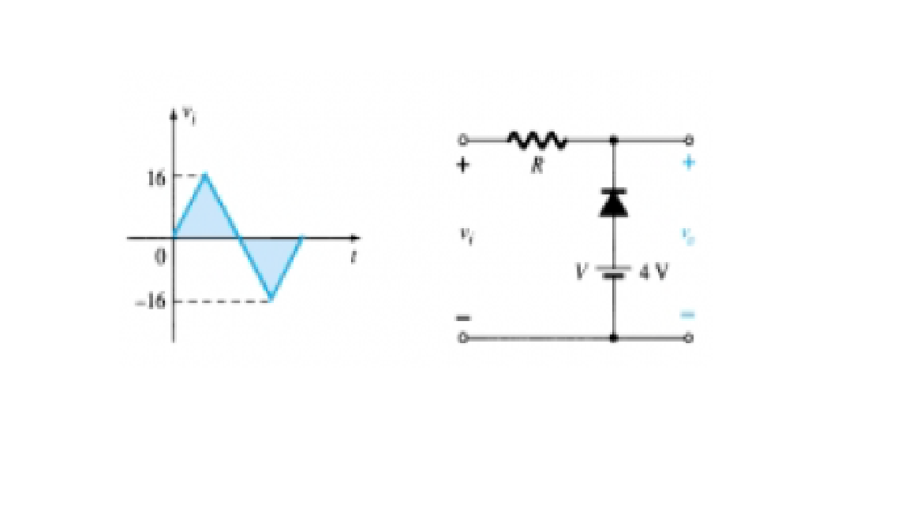
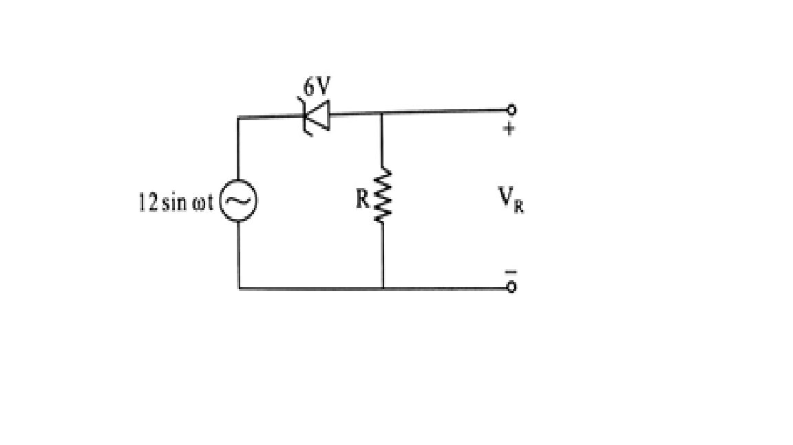
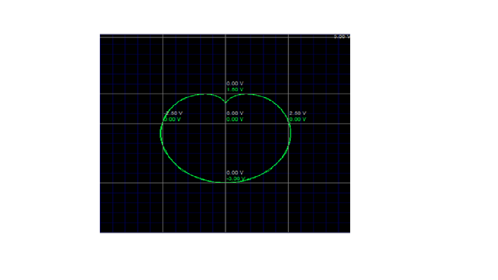
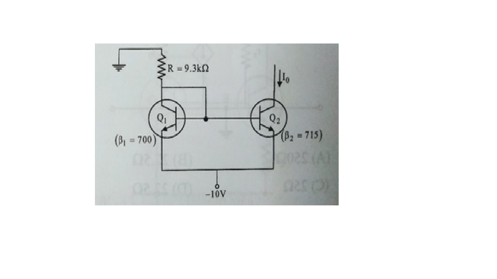

NOESIS Level 2
For 1st and 2nd years
For 3rd and 4th years
1. Recognize the TTL logic circuit as AND/NAND/OR/NOR/XOR/XNOR.(2 marks)
2. Raju, Farhan and Rancho working alone can complete a work in 6,8, and 10 hours respectively. All the three of them start working together. After 2 hours of working Raju has a fight with Rancho and he leaves the work and goes away. The remaining work is finished by Farhan and Rancho. Which of the following best represents the total time taken (T) to finish the work?Explain.
a) T < 1
b) 2.5 < T < 3
c) 3 < T < 3.5
d) T > 3.5
(2 marks)
3. The diode in the given circuit has VON=0.7V. Find the current (in mA) in the 4kohm resistor.(4 marks)
4. Design a circuit to obtain the following waveform from a given 2Vpp sinusoidal input.(4marks)
5. Draw the wiring of a circuit containing 3 lamps L1, L2, L3 such that it is possible to
• Turn off all the lamps
• Turn ON one lamp at a time
• Turn ON all the lamps
U may use maximum of 4 switches (SPST or SPDT switches may be used) and given, phase and neutral wires.(5 marks)
6. Design a burglar alarm system using JK flip-flop. When a burglar is sensed, the alarm should turn ON, and remain ON until the RESET button is pressed.(6 marks)
7. Suggest a method to get the pattern as in the fig, in a CRO.(Assuming ideal conditions) (3 marks)
8. For the given input waveform to the given circuit, what is the peak value of the output waveform? Explain your answer.
a) 0 V
b) 16 V
c) 12 V
d) 0 V
(4marks)

1. Raju, Farhan and Rancho working alone can complete a work in 6,8, and 10 hours respectively. All the three of them start working together. After 2 hours of working Raju has a fight with Rancho and he leaves the work and goes away. The remaining work is finished by Farhan and Rancho. Which of the following best represents the total time taken (T) to finish the work? Explain.
a) T < 1
b) 2.5 < T < 3
c) 3 < T < 3.5
d) T > 3.5
(2 marks)
2. For the given circuit, what is the minimum peak value of the output waveform if the input waveform is 10V square wave with switching time of 1 second?Explain.
Assume that the input switches between +10V and -10V DC levels.
a) 0 V
b) -5 V
c) -20 V
d) -10 V
(2 marks)
3. In the circuit shown below, if Vcc is +5V X & Y are digital signals with 0V as logic 0 and Vcc as logic 1, find the Boolean expression for Z in terms of X and Y. Elucidate the answer.(3 marks)
4. For the circuit below, assuming that the zener is ideal with a breakdown voltage of 6V, draw the waveform across R.(Given, the input is a 24Vpp sine wave) (4marks)

5. Design a burglar alarm system using JK flip-flop. When a burglar is sensed, the alarm should turn ON, and remain ON until the RESET button is pressed. (5 marks)
6. Find the output waveform of the circuit given.(Assume ideal conditions) (5 marks)
7. Design suitable circuit for generating the given X-Y plot on the DSO. Assume ideal conditions. Also assume that you are given with the required sinusoidal signals of various frequencies. (5 marks)

8. In the silicon BJT shown below, assume that the emitter area of transistor Q1 is half that of transistor Q2.Find I0. (4marks)

Upload the answers as PDF or DOC in the google form after you click the Submit button